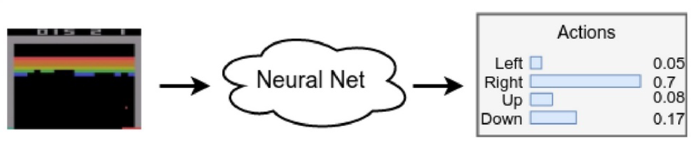

Written by LeeKH
Policy Gradients(PG)¶
Markov Decision Process 문제를 해결하기 위해 앞서 살펴보았던 Q-Learning방법과 비슷하게 Policy Gradient라는 문제 해결 방법이 존재한다. 이번 글에서는 Policy Gradient를 살펴보고 장점과 단점 그리고 Q-learning과의 비교를 통해 차이첨을 알아본다
우선 간단한 PG 방법으로 불리는 REINFORCE에 대해 알아보고 Deep Q-Networks와 비교해본다
Value and Policy¶
Review with respect to Q-learning¶

PG에 대해 알아보기에 앞서 기존 Q-learning에 대해 간략하게 정리해보자. Q-learning이란 Q 함수를 사용하여 특정 상태(state) 혹은 상태와 행동(state and action)에 따른 가치(value)를 계산해서 그 가치가 가장 높은 방향으로 행동하는 방법을 사용했다. 장기적 보상(Long-term reward)와 단기적 보상(immediate reward)를 모두 고려하기 위해 감소율(discount factor)과 벨만 방정식을 사용하였다
Policy in Q-learning¶
강화학습 이론에서 우리는 정책(policy)라는 개념을 정의하고 각 상황에서 취해야할 행동을 정책에 따라 움직이도록 정의하고 있다. Q-learning에서 정책은 아래와 같이 Q 함수를 사용하여 정의하였다 $$ \pi(a|s) = argmax_{a}Q(s,a) $$ Q 함수를 통해 각 행동의 가치를 계산하고 이를 바탕으로 최적의 행동을 결정하였다. 이와 같은 방식으로 Q-learning에서는 정책을 결정해왔다. Q 함수를 사용한 policy-value의 연결이 명확했기 때문에 Q-learning 에서는 대부분의 시간을 적절한 가치값을 계산하는 방법에 대해 몰두하였다. 앞으로 살펴볼 PG에서는 이 policy-value connection을 좀 더 면밀히 살펴보게 된다
Why Policy?¶
이전의 Q-learning같은 방법들과는 다르게 왜 정책(policy)에 집중하는지 알아보자. 우리는 실제 행동을 결정해야하는 상황에서 빠른 결정을 위해 다음 행동을 즉각적으로 취한다. 각 행동의 가치를 모두 따져보고 행동 하는 Q-learning과는 다소 차이가 있다

(긴박한 상황에서는 ~~가치~~ 계산에 실패하기 쉽다)
또한 행동이 연속적인 값을 갖는 경우(ex. wheel steering) Q함수를 최대로 하기 위해 부분 문제로 나눈 다음 해결해야하는 방법은 적용하기 힘들다. 가치를 계산하지 않고 직접적으로 행동을 취하는 방법을 생각할 필요가 있다. 이것이 정책(policy) 그 자체에 집중하는 이유이다
Policy Representation¶
앞서 정책(policy)을 직접적으로 사용하는 것의 이점을 알아보았다. 남은 것은 이 정책을 어떻게 ‘표현’ 할지의 문제이다. Discrete set의 action space를 갖는 경우에 정책이 특정 행동을 곧장 리턴해 줄 수도 있다. 하지만 이보다는 각 행동의 확률 분포로 나타내는 것이 일반적으로 많이 사용되는 방법이다

이처럼 확률 분포로 표현하는 방법은 모델의 weight변화에 출력 결과가 민감하게 변하지 않는 smooth represetation의 이점을 갖는다.
Policy Gradient¶
앞서 DQN에서 Q함수를 NN(Neural Network)로 사용하였듯이 이번에는 정책을 NN으로 사용하여 최적 정책을 찾도록 학습한다. 이제 정책(Policy) gradient를 위해 REINFORCE 방법의 Loss함수를 아래와 같이 먼저 정의하자. PG를 아래와 같이 정의하면, $$ L = -Q(s,a)log\pi(a|s) $$ 위 식의 증명 역시 중요하지만 이번에는 해당 식이 의미에 집중한다. 한마디로 표현하자면 PG는 Policy를 통한 누적 보상 값을 증가시키는 방향을 정의하게된다. $Q(s,a)$는 gradient의 비율(learning rate)의 역할을 하고 gradient는 log-probability값을 바로 사용한다. 마이너스 기호가 붙은 이유는 policy gradient를 maximize하기 위해 gradient descent 알고리즘을 사용하기 때문이다
The REINFORCE method¶
다음 행동을 확률 값으로 나타내는 방식을 policy-based 방법이라고한다. PG인 위 식에서 scale에 해당하는 값을 이전의 cross-entropy method에 적용해보자. Total reward가 일정 범위를 넘어가는 경우 해당 episode 값을 버리게 되는데 이는 $Q(s,a) = 0$ 을 의미하고 학습에 사용되는 episode는 $Q(s,a)=1$을 의미한다.
Cross-entropy에서는 위 처럼 간단하게 0과 1로 scale값을 결정했지만 $Q(s,a)$값을 그대로 사용하는 것이 더 낫다. Total reward가 높은 episode에 대해서는 gradient가 더 크게 작용하고 total reward가 낮은 episode에 대해서는 gradient가 더 낮게 작용하기 때문이며 이는 REINFORCE 와 Cross-entropy 의 대표적인 차이점이다
REINFORCE method는 구체적으로 아래 순서로 진행된다
REINFORCE¶
- 학습 모델의 가중치를 random 값으로 초기화한다
- N번의 episode를 진행하고 각 ($s, a, r, s’$)을 저장한다
- 이어서 각 episode $k$ , step $t$ 마다 얻게되는 누적 보상 값을 discount factor를 적용하여 저장한다. $Q_{k,t}=\sum_{i=0}\gamma^{i}r_{i}$
- 누적 보상 값을 바탕으로 Loss 값을 계산한다. $Loss = -\sum_{k,t}Q_{k,t}log(\pi(s_{k,t},a_{k,t}))$ , 여기서 $\pi(s,a)$가 신경망 모델의 예측값이 된다. 가능한 행동의 확률 분포(ex. 출력에 softmax를 적용)를 예측
- Gradient descent algorithm을 사용하여 loss값을 최소화한다
- Step 2부터 수렴할 때 까지 반복한다
Difference with Q-learning¶
Exploration¶
Q-learning에서는 예를 들면 Epsilon-Greedy같은 방식으로 exploration을 명시적으로 시행해야했다. 이를 통해 정책(policy)이 non-opimal 상태가 되는 것을 어느정도 막았다. 반면 policy-based 방법은 각 행동들에 대한 확률 분포를 얻을 수 있으므로 exploration이 자동적으로 수행되는 효과가 있다
No Replay Buffer & On-Policy¶
Q-learning과 다르게 replay buffer를 사용하지 않는다는 것은 이전 policy에서 얻은 데이터로 학습할 수 없다는 것과 동일하다. 이런 학습 방법을 on-policy라고 한다. REINFORCE역시 여기에 해당하며 Q-learning은 off-policy로 분류된다
On-policy의 장점은 수렴이 빠르다는 것이고 단점은 그만큼 environment와의 상호작용이 많이 필요하다는 점이다
No target network is needed¶
REINFORCE에서는 상호작용의 결과 $(s,a,r,s’)$로 인해 Q-value를 계산해서 사용한다. Q-learning에서는 Q함수를 근사시키기 때문에 target network가 필요하다고 볼 수 있지만 REINFORCE에서는 필요하지 않다
Policy-Based versus Value-Based methods¶
정리하자면,
- 정책 기반 방법들은 실제 행동에서 정책을 곧장 근사시킨다
- 따라서 대게 on-policy 방식이고 이전 정책의 경험 데이터가 아닌 실시간 데이터가 학습에 사용되어야 한다
- 위와 같은 이유로 정책 기반 방법들은 데이터 sample 사용에 있어 효율성이 떨어지는 편이다. 그만큼 환경과 agent가 상호작용을 더 많이(off-policy와 비교하여) 해야한다
REINFORCE issues¶
Too Long Episode¶
REINFORCE 방법에도 한계는 존재한다. 앞서 해당 방법 자체가 Cross-Entropy 방법의 확장판인데 문제는 둘다 간단한 환경에서만 작동한다는 점이다
그 중 하나는 전체 에피소드의 결과 데이터가 학습에 필요로 하는 특징 때문에 한 에피소드의 호흡이 긴 일부 문제들(ex. Pong in Atari)경우에는 적용하기 힘든면이 있다. 그리고 에피소드의 끝이 필요한 이유는 정확한 Q value 측정이 필요하기 때문이다
이를 극복하기 위한 몇 가지 방법들이 제안되었는데 하나는 N-step을 더 보는 벨만 방정식을 적용하는 것이고 다른 하나는 학습 모델인 신경망 네트워크가 특정 상태 s에 대한 가치 V(s)를 측정하도록 하여 Q 값을 얻는 방식이다. 그렇게 하면 모든 에피소드를 돌 필요 없이 곧장 가치 값을 추론할 수 있기에 하나의 대안으로 소개되고 있는 것이다. 후자의 방법이 이어서 소개될 Actor-Critic 방법이다
High Gradient Variance¶
또 다른 문제는 Gradient의 분산이 크다는 점이다. 쉽게 말하자면 Cart Pole 예제에서 특정 정책에서 수행한 에피소드의 평균적인 점수가 20인것에 반해 운 좋게 어쩌다 100점을 받은 케이스가 존재 할 경우 100점 받은 에피소드의 gradient가 많이 적용되어버린다(Q(s,a)를 scale로 사용하기 때문). 더불어 학습 과정이 불안정해 질 위험 역시 존재하게 된다
위 같은 문제에 대한 일반적인 해결책으로는 discounted reward들의 평균값을 사용하여 variance를 낮추는 방법, 특정 상태 s에서 가치 값 V(s)을 계산해 사용하는 방법등이 존재한다
Exploration - Entropy Bonus¶
앞서 학습 모델의 random weight 초기화로 인해 어느정도 exploration이 수행될 것이라고 이야기 하였지만 여전히 정책이 locally-optimal로 수렴할 가능성은 존재한다. DQN에서는 Epsilon-Greedy 방법으로 이 문제를 해결했었다. PG에서도 비슷한(혹은 더 나은) 방법을 적용할 수 있는데 이를 entropy bonus 라고 부른다
엔트로피는 정보 이론에서 특정 시스템의 불확실성을 측정하는데 사용되는 개념이다. PG에서는 다음 행동에 대한 확률 분포를 바탕으로 행동을 결정하기 때문에 Agent가 특정 행동을 취하려고 할 경우의 불확실성은 어느정도인지 판단하는 척도로 엔트로피를 다루게 된다. 정책 엔트로피를 수식으로 나타내면 아래와 같다 $$ H(\pi) = -\sum\pi(a|s)log\pi(a|s) $$ 확률 분포가 일정(uniform distribution)할 경우 엔트로피 값이 커지는 특징을 갖는다. 행동 확률 분포를 의미하는 $\pi(a|s)$의 엔트로피 값이 크다는 것은 모든 행동에 대한 확률 분포가 동일하다는 것이고 엔트로피 값이 작다는 것은 특정 행동의 확률 값이 1에 가까우며 나머지는 0에 가까운것이다. 특정 행동을 할 확률이 자명하므로 불확실성이 낮은 것이다
이제 정책 엔트로피 값을 Loss 함수에 뺄셈 연산 시킨다. Loss를 낮추는 방향으로 모델을 학습시키기 때문에 엔트로피 값이 커져야 Loss 값이 낮아진다 $$ Loss = -[\sum_{k,t}Q_{k,t}log(\pi(s_{k,t},a_{k,t})) ]-H(\pi) $$ 정책 엔트로피로 인해 모델의 행동 확률 분포가 특정 행동으로 수렴하는 것을 막아준다. 이 말은 곧 exploration을 할 수 있도록 하는 것이다. 이것이 entropy bonus 다
References¶
- Deep Reinforcement Learning Hands-On, Maxim Lapan, 2018